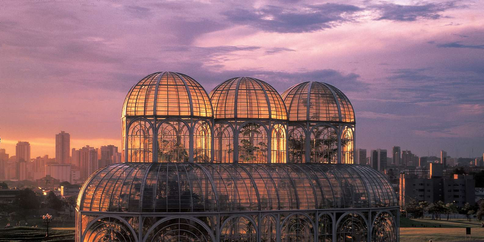
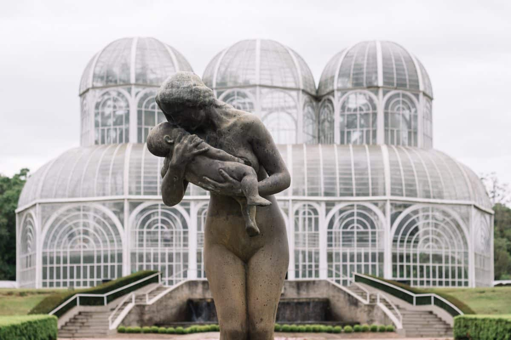
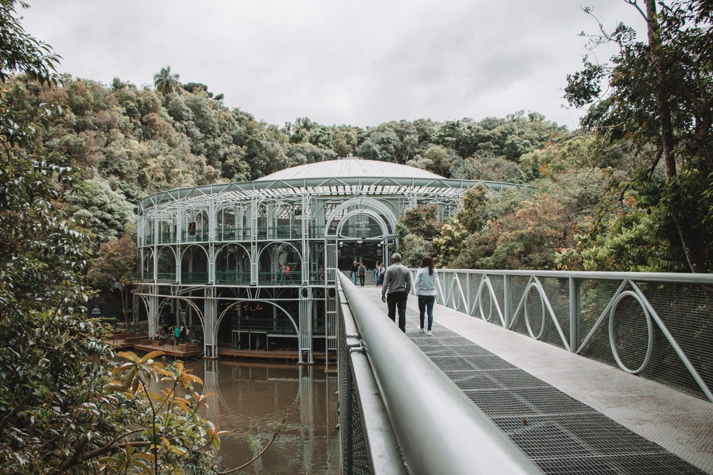

Sua próxima viagem:
Conheça Curitiba
O município, desde o seu surgimento, sempre foi reconhecido como a cidade que apostou em significativas inovações nos planos urbanísticos, que tinham como principal objetivo controlar o crescimento, criando uma cidade com ruas largas e de agradável convivência. Por conta de todas as inovações, Curitiba ficou conhecida internacionalmente como a cidade das inovações urbanísticas e preocupada com a preservação do meio ambiente. Uma das novidades mais famosas implementadas pelo município diz respeito ao transporte coletivo, que tempo depois, serviu como inspiração para o sistema TransMilenio, implantado na Colômbia.

Para os amantes de arquitetura
Descubra três destinos imperdíveis em Curitiba
Curitiba é um município brasileiro, capital do estado do Paraná, localizado a 934 metros de altitude no Primeiro Planalto Paranaense, a mais de 110 quilômetros do Oceano Atlântico, distante 1 386 km a sul de Brasília, capital federal. Com 1 773 718 habitantes, é o município mais populoso do Paraná e da região Sul, além de ser o 8.º do país, segundo Censo Demográfico realizado pelo IBGE para 2022.

1. Jardim Botanico
Com sua estrutura metálica influenciada pela da art-nouveau e seus jardins geométricos, o Jardim Botânico é, sem dúvida, um dos principais pontos turísticos de Curitiba. Inaugurado em 1991, o local abriga inúmeras espécies nativas da mata atlântica, trilhas, lago, museu, quadras esportivas e até velódromo.Uma atração à parte é o Jardim das Sensações, na qual você é vendado para conhecer as paisagens e plantas através dos outros sentidos, seja sentindo o perfume das flores, andando com os pés no chão ou percebendo cada textura da natureza. É um ótimo lugar para assistir ao pôr do sol!
Bom para:
- Tarde com a família
- Piquiniques
- Passeios Românticos

2. Ópera de Arame
Lugar exótico que mistura modernidade, natureza e cultura. A Ópera de Arame é uma estrutura metálica construída no meio de um lago, com vegetação nativa e cascata ao seu redor, se completando de uma forma única. É um dos passeios em Curitiba impossíveis de perder! O local faz parte do Parque das Pedreiras e é cenário de shows, apresentações teatrais, festivais, concertos musicais e todo tipo de espetáculo. Por isso, recomendamos que você dê uma olhadinha na programação deles antes de fazer seu roteiro. Vale lembrar que as visitas a essa maravilha da arquitetura é paga, e para consultar os preços basta entrar no site: https://operadearame.com/Bom para:
- Tarde com a família
- Arquitetura
- Shows e Concertos

Largo da Ordem
Bem no coração do centro histórico de Curitiba está o Largo da Ordem, com as construções mais antigas da cidade, incluindo a primeira igreja local, a Igreja da Ordem Terceira de São Francisco das Chagas.É lá que também acontece a Feira do Lago da Ordem, na qual você encontra pinturas, artesanato, apresentações de artistas locais, cerâmicas, teatro de rua e comidas típicas. A feira rola aos domingos das 9h às 14h.
Bom para:
- Tarde com a família
- Compras (comida, arte e artesanato)
- Apresentações artistícas de rua